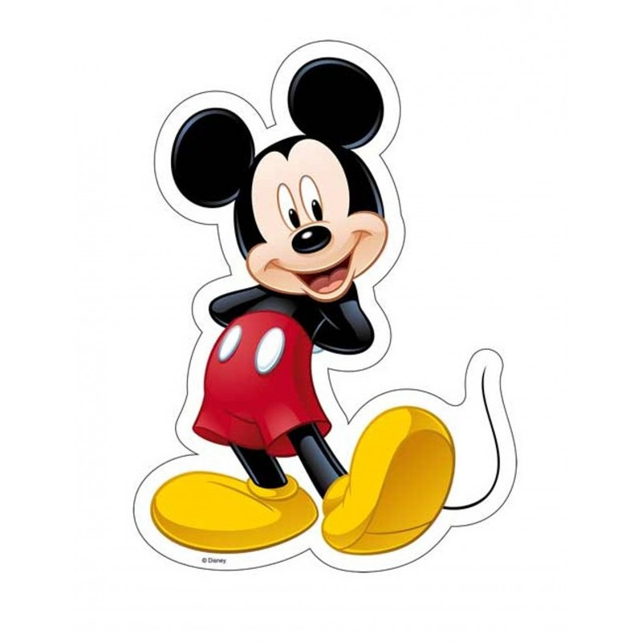

Meet the Team
Unsere furchtlosen Mitarbeiter stehen wirklich hinter dem täglichen Erfolg des Ketabkhan-Phänomens. Wir haben so eine großartige charismatische Gruppe leidenschaftliches literarisches Team. Wenn Sie eine Frage zu einem bestimmten Kapitel haben, kontaktieren Sie uns!
|  | Begründer Mickey-Mouse |
Ich habe den Ketabkhan 2017 gegründet, weil ich gerne lese und nicht viele Leute in Stuttgart kannte. Ich arbeite Vollzeit für Ketabkhan und zähle jeden Tag meine Glückssterne. |
 |
Koordinator Shrek |
Ich habe schon immer gerne gelesen und war im Laufe der Jahre in mehreren Buchclubs engagiert. Nachdem ich dem Buchclub beigetreten war und verfolgte, welche Bücher sie lasen, wusste ich, dass ich ihrem Buchclub eine Chance geben musste. Da es in meiner Stadt keinen gab, besuchte ich einen in der Nähe und liebte ihn noch mehr. Ich suche immer nach einer Möglichkeit, mit anderen Lesern in Kontakt zu treten, und liebe die Community, die ein Buchclub mit sich bringt. |
| Marketingleiter Tom |
Ich kam 2020 zum Team von Mickey und frage mich immer noch, wie ich so glücklich sein konnte, nicht nur mit großartigen Buchtiteln, inspirierenden Autoren und großartigen Verlagsteams zusammenzuarbeiten, sondern auch Teil der globalen Community leidenschaftlicher Leser zu sein! Ich liebe es, über die Bücher zu stöbern, die ich verschlungen habe, und Charaktere, in die ich mich im Buchclub verliebt habe. Wenn ich nicht gerade die wochentlichen Buchtipps lese, fröne ich entweder dem neusten angesagten Titel zeitgenössischer Belletristik oder vertiefe mich in ein saftiges Buch zur Persönlichkeitsentwicklung. |